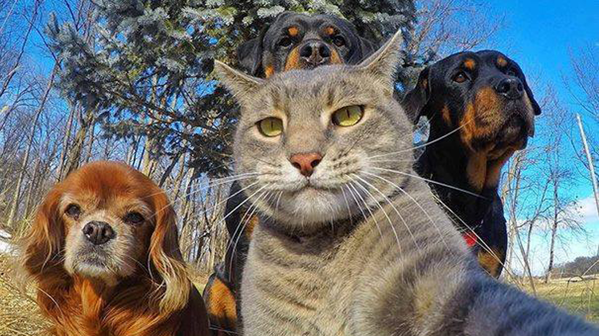

Proporcionar servicios integrales de la más alta calidad para las mascotas a través de sistemas preventivos, emergentes y de medicina interna para así mejorar la salud de las personas incrementando la relación Humano-Animal.
Contar con un Hospital Veterinario de Especialidades único en la zona, con sucursales que abarquen toda el área metropolitana, satisfaciendo la necesidad de servicios veterinarios para personas que buscan trato profesional y especializado.
Generalmente la época navideña viene acompañada con la baja de las temperaturas, es por esta razón que debemos atender a nuestras mascotas con mucha responsabilidad, para poder disfrutar de su compañía sin inconvenientes y evitar la aparición de enfermedades. A continuación, te compartimos algunas recomendaciones que te pueden ser útiles: Si tu mascota pasa parte del día en el jardín, patio o garaje, asegúrate de que tenga un lugar calientito y seco donde permanecer. En la medida de lo posible, trata de que pueda estar dentro de la casa en un ambiente cálido o con calefacción. Pon a su disposición una camita, colchoneta o manta, en la que pueda pasar el día y la noche cómoda y calientita. Su cama y manta deben estar limpios y secos. Es posible que durante esta época de frio, tu mascota coma un poco mas de lo habitual para mantener su calor corporal. Cuida de no alimentarlo de mas para evitar el sobrepeso...